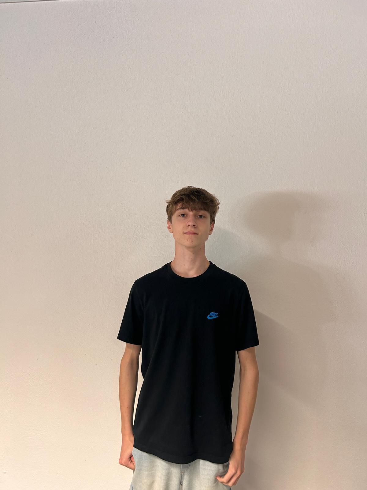
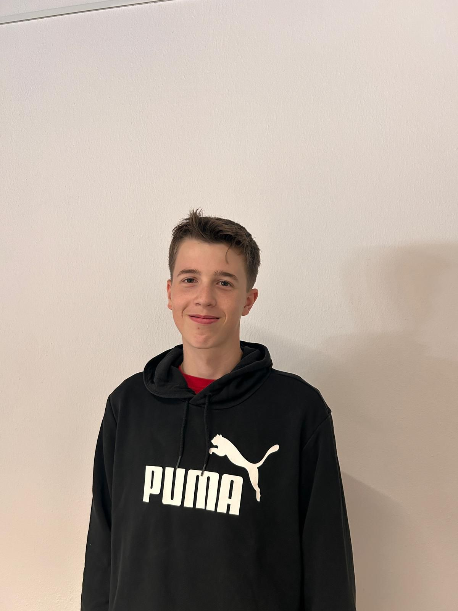
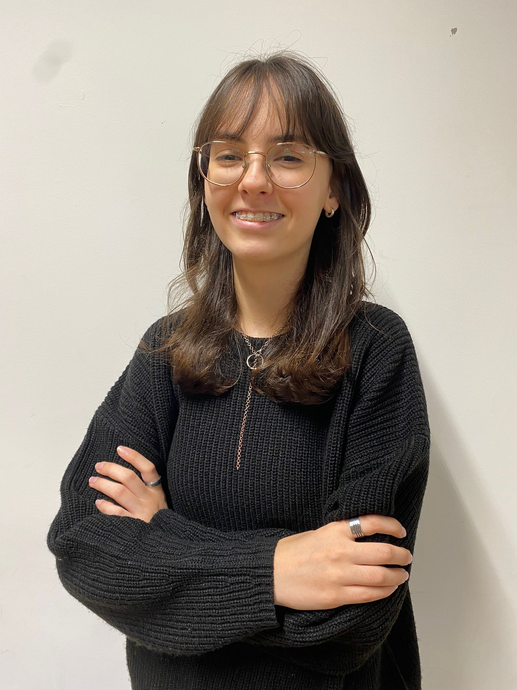
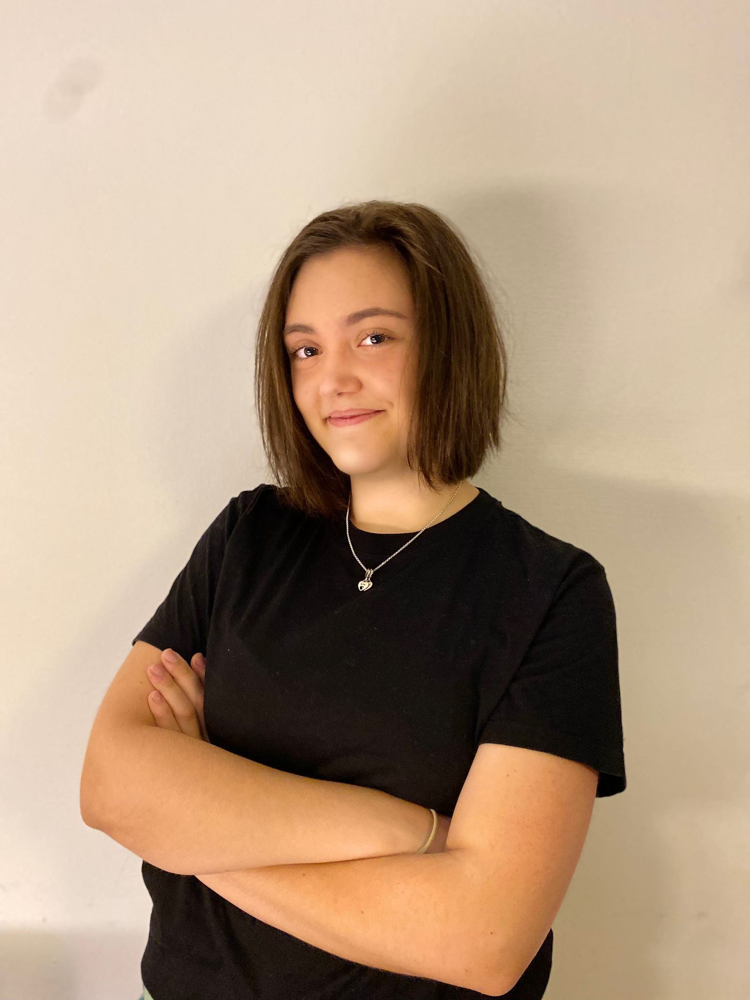
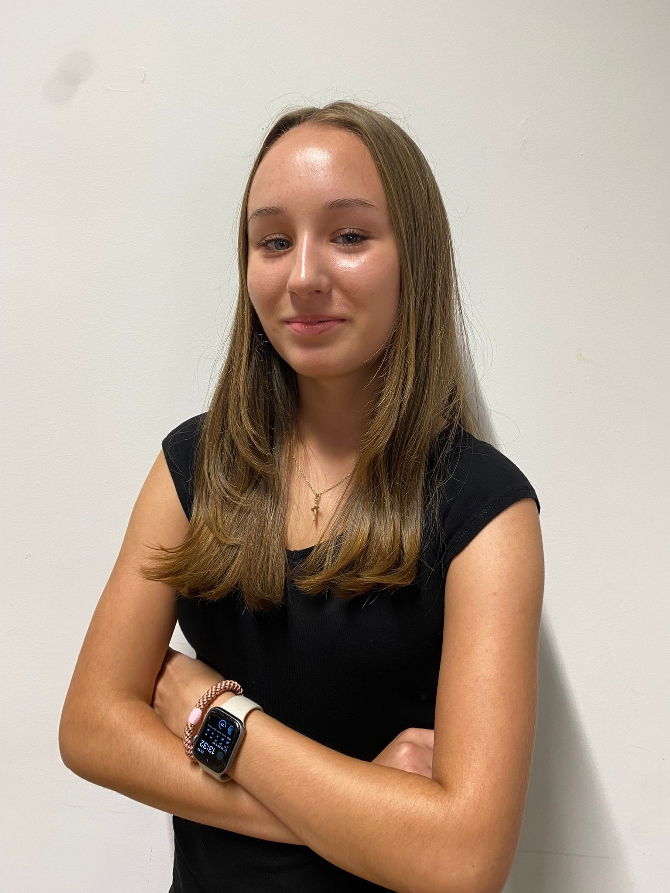
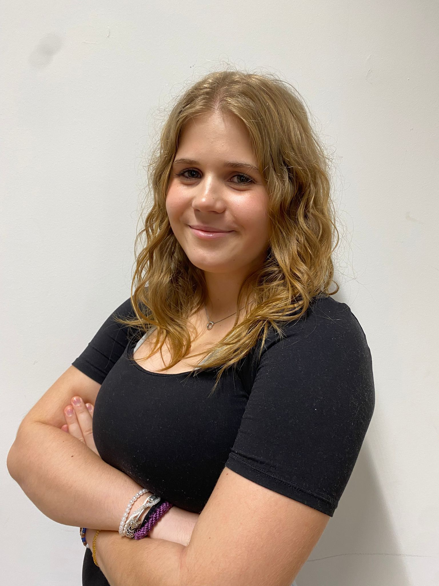

 Robin Opolony ist unser Konstrukteur für den Rennwagen und arbeitet eng mit Emilian zusammen. Besonders an der Abstimmung der Aerodynamik, um die Leistung des Fahrzeugs zu optimieren. Dies erfolgt durch zahlreiche Tests und Simulationen. Emilian Bungarz ist unser CAD-Konstrukteur, wobei er gemeinsam mit Robin für die regelkonforme Konstruktion des Rennwagens zuständig ist. Außerdem analysiert er Fertigungsverfahren, um für uns eine effiziente und hochwertige Produktion zu gewährleisten. Ace Weißenburger ist unsere Grafikdesignerin. Sie entwickelt Grafik- und Designkonzepte. Außerdem kümmert sie sich um Logos, Merchandise, virtuelle Kampagnen, Layouts, Illustrationen sowie die Gestaltung unserer Teamkleidung, der Website und den Portfolios. Lara Barth ist für die Betreuung und Weiterentwicklung des Teamstandes verantwortlich und trägt maßgeblich zur Gestaltung der Außenpräsenz sowie zu den Marketingaktivitäten des Teams bei. Dabei legt sie besonderen Fokus darauf, das Interesse junger Schüler*innen am internationalen Technologie-Wettbewerb zu wecken. Mina Langer ist unsere „Frau für alles“. Sie trägt die Hauptverantwortung für die Einhaltung der Wettbewerbsregeln und das Management der verfügbaren Ressourcen. Zusätzlich unterstützt sie Lara bei der Gestaltung der Außenpräsenz sowie bei Marketingaktivitäten des Teams. Sophie Bolle ist unsere Teammanagerin. Als solche koordiniert sie die Arbeitsabläufe, erstellt Zeitpläne und Aufgabenlisten. Außerdem ist sie für die Betreuung und Weiterentwicklung des Teamstandes verantwortlich und trägt maßgeblich zur Gestaltung der Außenpräsenz sowie zu den Marketingaktivitäten des Teams bei.
Erklärung zum Namen Daidalos: Daidalos war nicht nur eine berühmte Figur der griechischen Mythologie, sondern gilt auch als Symbol für Erfindungsreichtum und technisches Können. Er war ein genialer Handwerker, Architekt und Ingenieur, der viele technische Meisterwerke erschuf. Sein bekanntestes Werk ist das Labyrinth auf Kreta, ein komplexes Bauwerk, das den Minotaurus einschloss und als frühes Beispiel für ausgeklügelte Ingenieurskunst gilt. Außerdem soll er verschiedene Maschinen, kunstvolle Skulpturen und Vorrichtungen erfunden haben, die seine Fähigkeiten in Mechanik und Konstruktion zeigen. Die Geschichte von Daidalos und seinem Sohn Ikarus – der Bau der Flügel aus Federn und Wachs – zeigt nicht nur seine Kreativität, sondern auch ein frühes Verständnis für physikalische Prinzipien wie Auftrieb, Flug und das Verhalten von Materialien unter Hitze. Insofern gilt Daidalos als eine Art Urvater der Technik und des Ingenieurwesens, dessen Ideen und Geschichten bis heute Menschen inspirieren, innovativ zu denken und technische Herausforderungen kreativ zu lösen. Zusammenfassend: Daidalos steht für Erfindergeist, technisches Wissen und die Verbindung von Kreativität und Ingenieurskunst – eine Figur, die Mythologie und Wissenschaft miteinander vereint.